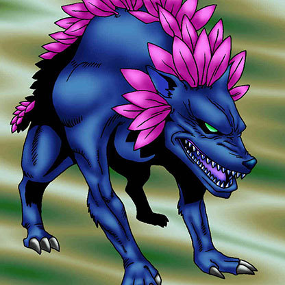

Flower Wolf

STATS
ATK: 1800
DEF: 1400DECK COST
Deck Cost per Card: 32Fusion List (12 Possible Fusions)
- Flower Wolf + Ancient Brain = Garvas
- Flower Wolf + Dancing Elf = Nekogal #2
- Flower Wolf + Fire Eye = Flame Cerebrus
- Flower Wolf + Fire Reaper = Flame Cerebrus
- Flower Wolf + Firegrass = Flame Cerebrus
- Flower Wolf + Key Mace = Nekogal #2
- Flower Wolf + Kurama = Garvas
- Flower Wolf + Lady of Faith = Nekogal #2
- Flower Wolf + Lunar Queen Elzaim = Nekogal #2
- Flower Wolf + Nemuriko = Nekogal #2
- Flower Wolf + Princess of Tsurugi = Nekogal #2
- Flower Wolf + Wings of Wicked Flame = Flame Cerebrus